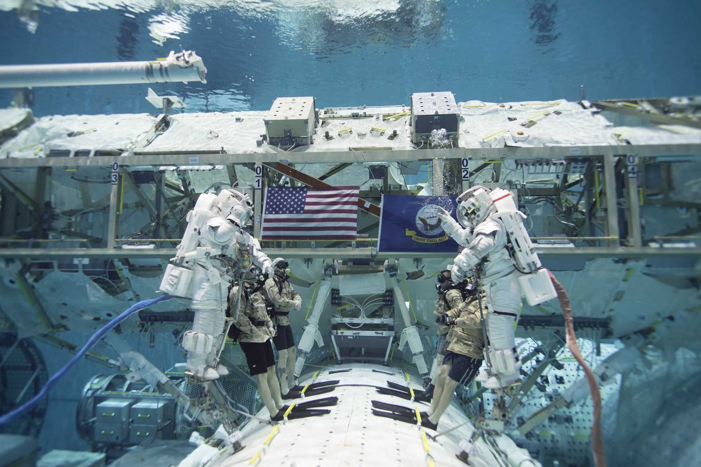
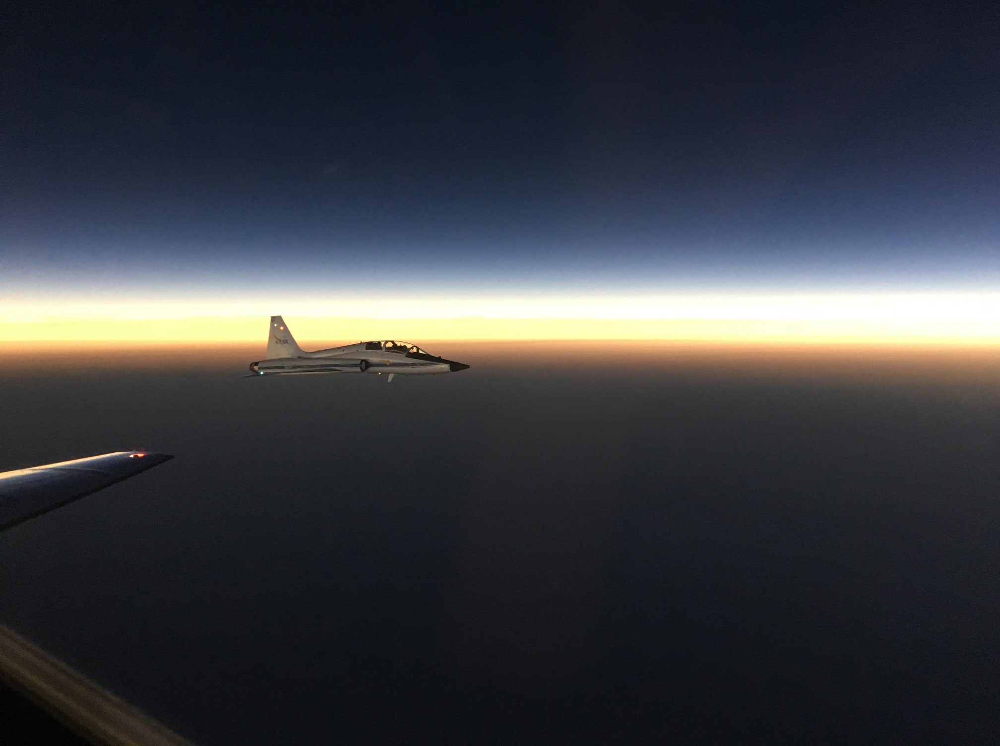

September 2nd, 2020 15:14

2 years ago: my 4th Navy promotion. This time in a different uniform and a unique ceremony during a few stolen moments of training. I am very grateful to everyone in my life and career who got us to that day. @AstroMarshburn officiated, spacewalk instructor Sandy Moore coordinated from upstairs, and the incredible Neutral Buoyancy Lab divers, many who are vets themselves, made it happen -- even down to both the U.S. National and Naval Ensigns and the waterproof silver oak leaves velcroed to my shoulders.
Just another example of NASA's dedication to excellence through teamwork. Congratulations and a most sincere thank you to my fellow service members who are promoting this year.
July 16th, 2020 08:27

One year ago today, Nicole Mann, Kate Rubins, Jessica Meir, and I had the unique opportunity to race #Eclipse2k19 in T-38 formation. The eclipse may have won, but we got 0.1 hours of nighttime flying in the middle of the day.
We're thankful to our lead plane for getting this amazing shot. As an eclipse like this is so rare, we don't get the chance to fly alongside one as often. Knowing that this was a remarkable opportunity (and an even more remarkable shot) is something I'll never forget.
February 19th, 2019 12:45 [REDACTED]
The closer we get to settlers arriving on Mars, the happier I am. This crew is beginning to get on my nerves.